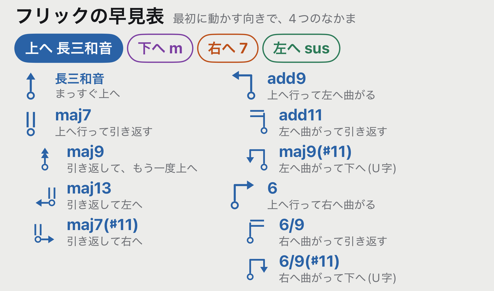

弾き方
くわしい弾き方は、アプリの中にあります。まずは「弾き語りへの道」のステージ1から始めてください。
画面
- パッド（左手）: 押さえて和音を選びます。パッドからは音は出ません。
- プレート（右手）: ここで音を鳴らします。音が出るのは右手だけです。
持ち方
はじめは、ゲーム機のように両手で持って弾けます。
慣れてきたら「立てて持つ」持ち方に進みます。iPhone を縦に立てて、画面を右手側へ向け、上から覗けるよう少し傾けます。アイランドのある端は右手のひらに載せて支え、右手の親指でプレートを弾きます。左手では iPhone を持たないので、手ごとパッドの上を自由に動かせます。くわしくはアプリの「弾き語りへの道」で、ステージごとに案内します。
右手の弾き方
| 払い | プレートを上下にシュッと払う。ジャカジャカ鳴ります |
|---|---|
| 単音 | 指1本でトンと触れる。ポロンと1音ずつ |
| 2本置き | 指2本を同時に置いて、動かさずに離す。キラーンと鳴ります |
和音の種類を変える
パッドを押さえたままフリックすると、セブンスなどに和音の種類が変わります。どのフリックで何になるかは、アプリの「弾き方」と早見表で見られます。

Bluetooth のイヤホンやスピーカーでは音が 0.1〜0.3 秒おくれて聞こえるので、リズムに合わせて弾くのはほとんどできません。iPhone のスピーカーか、有線のイヤホンで弾いてください。